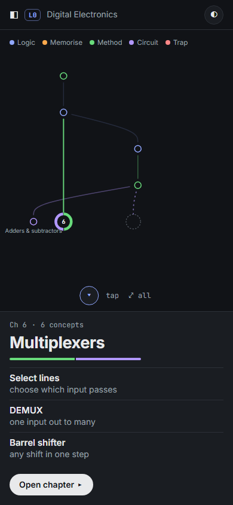
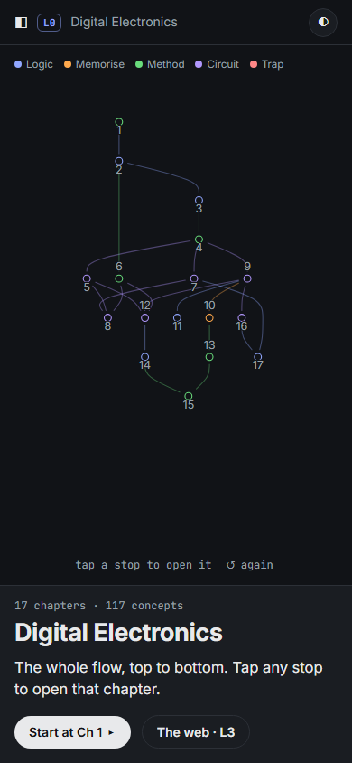
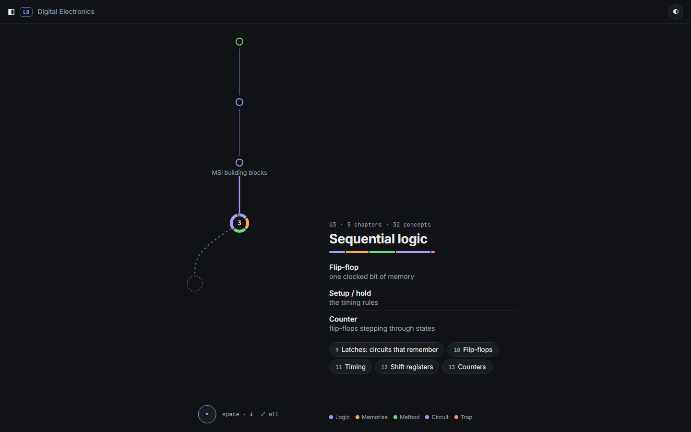
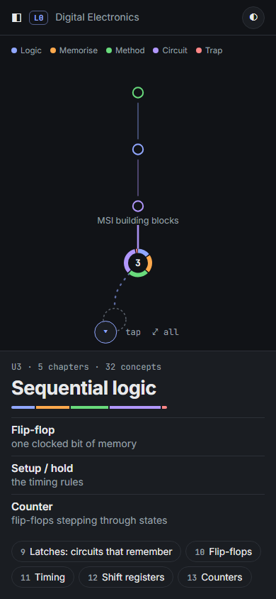
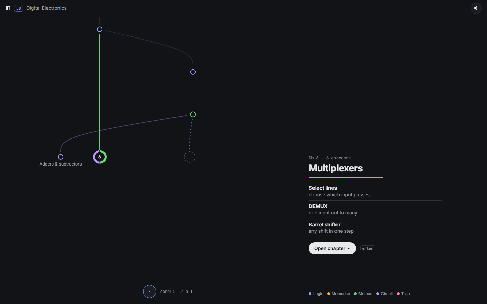
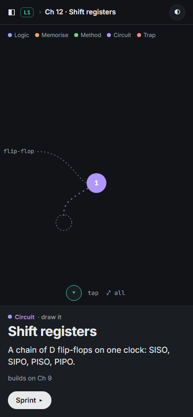

The session 2 rework, built from your feedback. L0 and L1 now use the same river: it waits for your input, and each input lets the water flow on to the next stop. Each stop shows its heading and three key words, nothing more. L2 is a sprint with only the content on screen. L3 is the web, where each link is its own small idea.
Screenshots can't show the motion. Open the live page and press space (or tap).
The river of chapters. Only the stops you have reached: the current one is big and older ones shrink to dots. The next stop waits as a faint dotted ghost, with water trickling toward it.
space / ↓ / tap: the water flows on to the next stop and its priming card appears
1 card, ≤ 3 labels; older links fade
L1 chapter
The same river, made of the chapter's concepts. A stop that needs something from another chapter shows a dotted tributary flowing in, e.g. Ch 9 · D flip-flop.
the same keys; Enter or a tap on the current stop starts its sprint
1 card: the concept's kind and one sentence
L2 sprint
Nothing but the content, one small step at a time: guess → the idea → each figure → each point → check → done. An × to leave. The top bar and the from/to strip are gone.
space / → / tap to go on; ← back; Esc to leave
1 step
L3 web
The full chapter map as faint dots. The concept's links to other chapters are revealed one per input, each as a curved line with its two concept names.
the same keys; Enter sprints the current link
1 link lit at a time
L4 link (split variant)
A link sprint: the two ends → guess the connection → the bridge → done.
as in L2
1 step
L0 Three rivers
Every variant waits for input. On each step:
the water draws itself down the edges into the new stop;
the stop pops in;
a pulse marks where you are;
a trickle runs toward the dotted ghost of the next stop.
at the end, ⤢ see it all: the whole flow, only if you ask for it · live

phone, step 6

phone, see it all
B · Units first (6 stops; each unit lists its chapters)

unit 3: three key words, then its 5 chapters as buttons · live

phone
C · Scroll river (scrolling drives the flow)

looks like A; the input is the scroll wheel or a swipe · live
A · step river engine's pick
every chapter gets its own priming stop
you can see convergence: streams join at a stop
17 inputs to see all of it the first time (⤢ all skips ahead)
the middle of the DE graph is wide, so some streams cross
B · units first
6 stops: inside the 6–12 target, and the lowest load
straight down, no crossings
chapters become a list and lose their own priming
the web between chapters is hidden
C · scroll
the most natural gesture on a phone
easy to scroll past a stop without reading it, which works against the point of priming
the pace belongs to the wheel, not to you
L0 The priming card
Your idea of “priming” has an evidenced form:
Pretraining (Mayer): learn the names and key traits of the parts before the lesson. It helped in 13 of 16 tests. The median effect was large, and that size is probably inflated.
Advance organizers (a short overview up front): a modest benefit.
Pretesting (guess before you're taught): strong.
The pop-science idea of priming (hidden cues quietly changing behaviour) mostly failed to replicate. None of this uses it.
3 key terms, each with a short gloss (default): pretraining · live
Each kind also tells you how to study it, which is why there are five and not two:
Logic · work it out (22). You can derive these from earlier ideas, e.g. De Morgan, carry look-ahead.
Memorise · remember it (17). Facts, values and tables, e.g. BCD, excitation tables, PDP.
Method · do it (35). Step-by-step recipes, e.g. K-map grouping, synchronous counter design.
Circuit · draw it (40). Blocks to recognise and draw, e.g. MUX, SR latch, CMOS inverter.
Trap · avoid it (3). Where marks are lost.
Why study by kind: procedures go better when you see a worked example first, while concepts go better when you try them first (research/03 §5). Things to memorise need retrieval practice (research/02 §1).
role colours: a leaf becomes a node as links appear · live

phone
L2 The sprint: content only
Don't-cares, one step at a time. Only the K-map chapters (Ch 3–4) have real cards so far. Every other concept shows the idea plus a note that its full card comes with content engine v2 (session 4).
a link's sprint opens from the map you're looking at
Split: L3 map · L4 explains
L3 stays purely visual
the only real difference is a name and one more step down; the sprint is identical
! Honest problems
1. The middle of the DE chapter graph is wide (5 chapters on one row), so in variant A some streams cross around steps 9–13. Old links fade to 16% so the current one still reads. A custom river layout that keeps a main channel could do better; that belongs in the session 3 build.
2. The kinds, priming lines and key terms are hand-written. They stand in for the automatic step, the same way de_graph.py does. Some tags are judgement calls, e.g. Gray code as a method. In v2 proper the engine writes these from the knowledge base.
3. Sprints only have real content where v1 cards exist (9 K-map concepts). Content engine v2 (session 4) fills in the rest.
4. L3 works at chapter level: chapters are dots, and each link shows the concepts at its two ends. Putting all 117 concepts on one screen would break the visual-load rule, so that wasn't built.
5. On a phone, “see it all” fits only chapter numbers, not names. It is the one dense view, and you only see it if you ask for it.
Your picks (answer in any form, e.g. “A, terms, kind, merged”):
L0 variant: A step river · B units first · C scroll. Engine: A
Priming card: 3 terms · one sentence · guess first. Engine: 3 terms on L0 stops, and guess first on L1 stops automatically wherever a real predict question exists
Default colour: kind · topic · role · layer. Engine: kind, with role as a toggle
L3: merged · split (L4). Engine: merged
Sprint: step dots on or off. Engine: on
Anything that still feels like too much, on any screen?